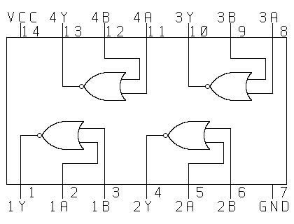

Sample Pin Layouts
The diagrams on this page show the pin layouts for the TTL chips in your breadboard kits. You can look up the pin layouts for other chips at http://upgrade.cntc.ac.kr/extern.html. Just click on the "Num. Ord.".
| Designation | Operation | Diagram |
|---|
| 74HCT00 | Quad 2-input NAND | |
| 74HCT02 | Quad 2-input NOR |  |
| 74HCT08 | Quad 2-input AND | |
| 74HCT32 | Quad 2-input OR | |
| 74HCT74 | Dual D-Type Flip-Flop |  |
| 74HCT86 | Quan 2-input XOR | |
Last modified: Wed Aug 31 16:03:52 EDT 2005